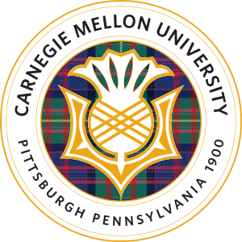

Travel
31 places · 2 continents · still counting
hello, world — i'm

Research Assistant @ Carnegie Mellon UniversityTeaching language models to reason in latent space, decode by diffusion, and work together.
01/ about
I am a Master's student in Computer Science at Dartmouth College, supervised by Prof. Soroush Vosoughi. I am also a research assistant in the Department of Electrical and Computer Engineering at Carnegie Mellon University, supervised by Prof. Andrea Zanette. Before that, I received my B.Eng. in Software Engineering from Sun Yat-sen University.
My research focuses on diffusion language models, latent reasoning, LLM agents and multi-agent systems, and reinforcement learning.
I am looking for a PhD position starting in Fall 2027.
education
M.S. in Computer Science full scholarship
B.Eng. in Software Engineering
02/ experience
Oct 2025 – now
Department of Electrical and Computer Engineering, Carnegie Mellon University
Apr 2025 – Aug 2025
Neusoft Research Institute, Neusoft Corporation
03/ publications
Proceedings of the AAAI Conference on Artificial Intelligence, 2026
@inproceedings{yang2026augmented,
title = {Augmented Runtime Collaboration for Self-Organizing Multi-Agent Systems: A Hybrid Bi-Criteria Routing Approach},
author = {Yang, Qingwen and Qu, Feiyu and Guo, Tiezheng and Liu, Yanyi and Wen, Yingyou},
booktitle = {Proceedings of the AAAI Conference on Artificial Intelligence},
volume = {40},
number = {35},
pages = {29811--29819},
year = {2026},
doi = {10.1609/aaai.v40i35.40227}
}Proceedings of the AAAI Conference on Artificial Intelligence, 2026
@inproceedings{liu2026detection,
title = {From Detection to Diagnosis: Advancing Hallucination Analysis with Automated Data Synthesis},
author = {Liu, Yanyi and Yang, Qingwen and Guo, Tiezheng and Qu, Feiyu and Liu, Jun and Wen, Yingyou},
booktitle = {Proceedings of the AAAI Conference on Artificial Intelligence},
volume = {40},
number = {38},
pages = {32222--32230},
year = {2026},
doi = {10.1609/aaai.v40i38.40495}
}Information Processing & Management, 64(1), 2027
@article{yang2027stage,
title = {Stage-aware {LLM-SLM} collaboration for agentic tasks via joint routing and verification},
author = {Yang, Qingwen and Tang, Jiawei and Li, Xuejing and Guo, Tiezheng and Liu, Yanyi and Qu, Feiyu and Wen, Yingyou},
journal = {Information Processing \& Management},
volume = {64},
number = {1},
pages = {105065},
year = {2027},
doi = {10.1016/j.ipm.2026.105065}
}Expert Systems with Applications, vol. 328, 2026
@article{guo2026loom,
title = {{LOOM}: Weaving high-quality long-texts through hierarchical planning and reflective feedback},
author = {Guo, Tiezheng and Yang, Qingwen and Liu, Yanyi and Tang, Jiawei and Qu, Feiyu and Wen, Yingyou},
journal = {Expert Systems with Applications},
volume = {328},
pages = {132879},
year = {2026},
doi = {10.1016/j.eswa.2026.132879}
}Citation counts and the latest list live on Google Scholar.
04/ blog
05/ life
31 places · 2 continents · still counting
06/ contact
I am looking for a PhD position starting in Fall 2027. If my interests fit your group, I would love to hear from you.
Email is the best way to reach me. You can also find me on Google Scholar, GitHub and LinkedIn.